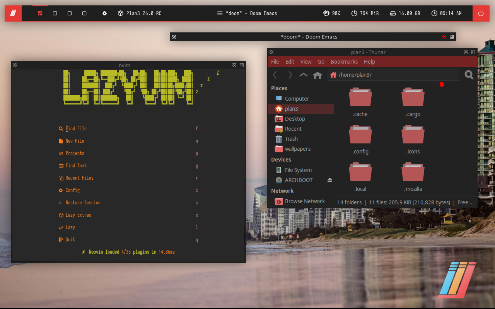

Plan3 (pronounced Plan Three) is an opinionated Arch Linux desktop framework that is installed on top of Arch Linux offering a family of desktop and software configurations.
Releases
Rhapsody (26.0 RC)
Install
To install Plan3 Rhapsody, run these lines in the terminal:
git clone https://github.com/plan3linux/plan3-config.git && cd plan3-config
./install.shView Source on GitHub
Prerequisites
- Arch Linux or CachyOS or etc.
- x86_64 and ARM64 Supported
- Paru
- Sudo
About
With Rhapsody, we are replacing the ISO based distribution to an installation script model for a few reasons:
- It is easy to keep up to date
- It allows cross-compatibility across x86_64, ARM64, and even RISC-V
- Can be installed on other arch-distros like Manjaro, Arco Linux, and EndeavorOS. Artix support TBD
- Allows even further opportunities for non-arch installs like on Debian, Gentoo, RHEL, or other distros
Screenshots
Developer Preview 2023
Back in December 2023, Plan3 started as a bspwm-based Arch distro distributed with calamares. It is currently stale and unsupported.
The configuration files were distributed through a custom arch repo, and were replaced with a simpler install script
Screenshots